Ally Mintz

Members
Ryan Wu
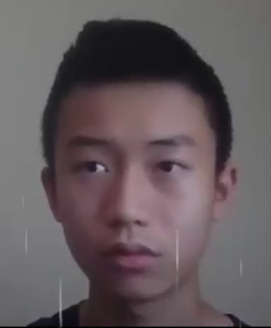Amanda Bialick
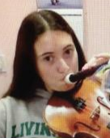Ryan Stern
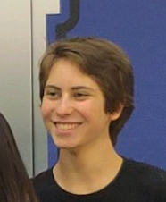Olivia Mei
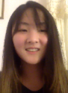Zach Canent
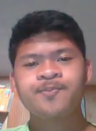Lanz Canent
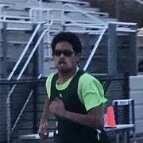Andrew Chan
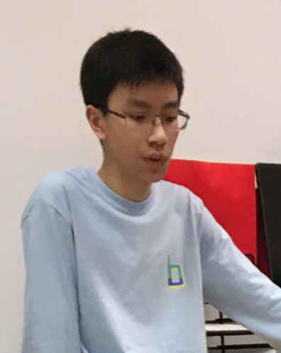Killian Deng
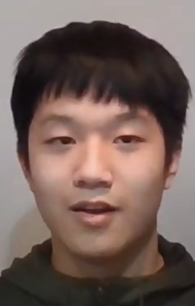Erica Wang
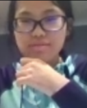Jessica Su
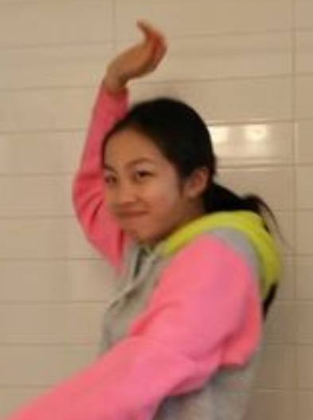Jake Tang
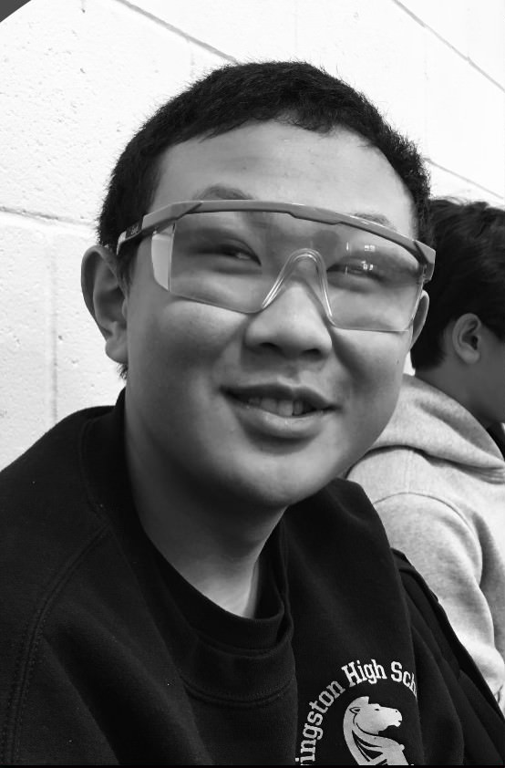Ms. Ziobro
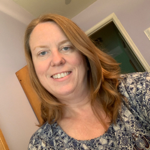Mr. Micciche
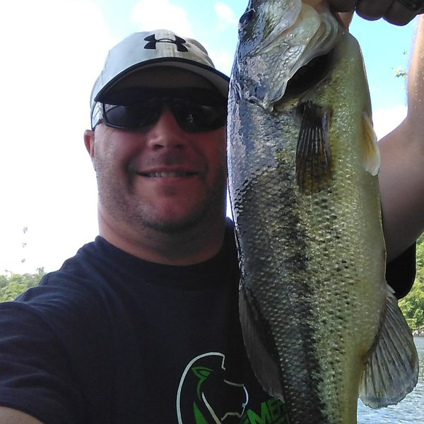Mr. Novotny
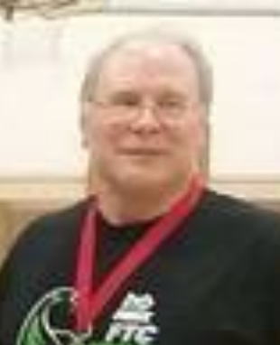Perry Chen
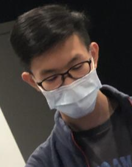Heainz Manoj
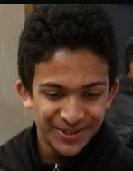Anthony Chow
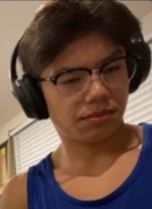Thomas Lang
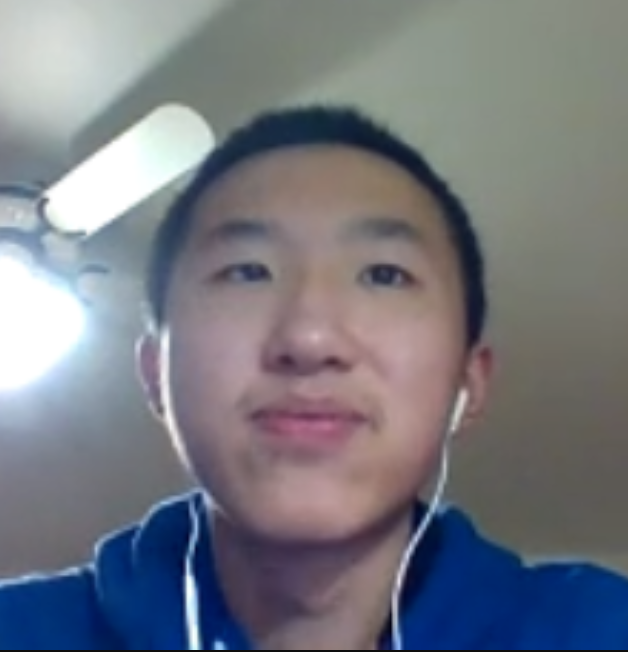Ally Mintz
Lucy Xu
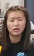Divyank Jain
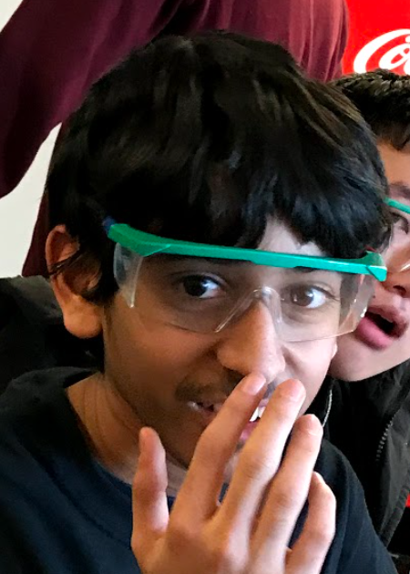Ethan Dcosta
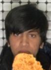Nicolo Agbayani
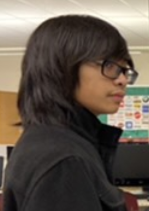Angelina Chu
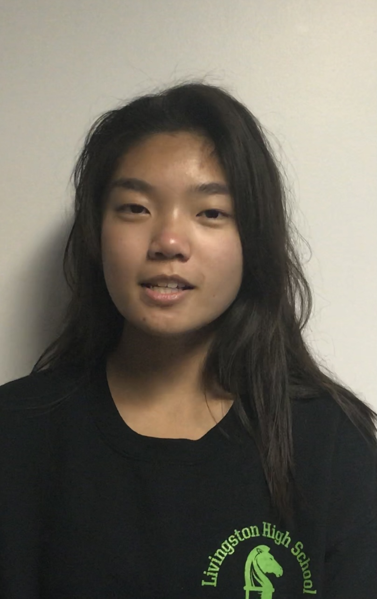Talia Rabban
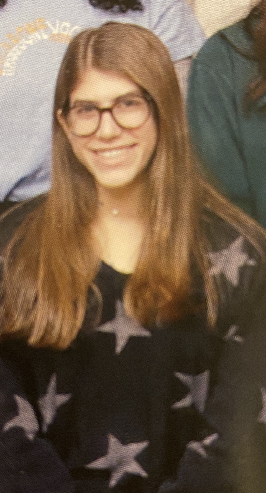Justin Kim
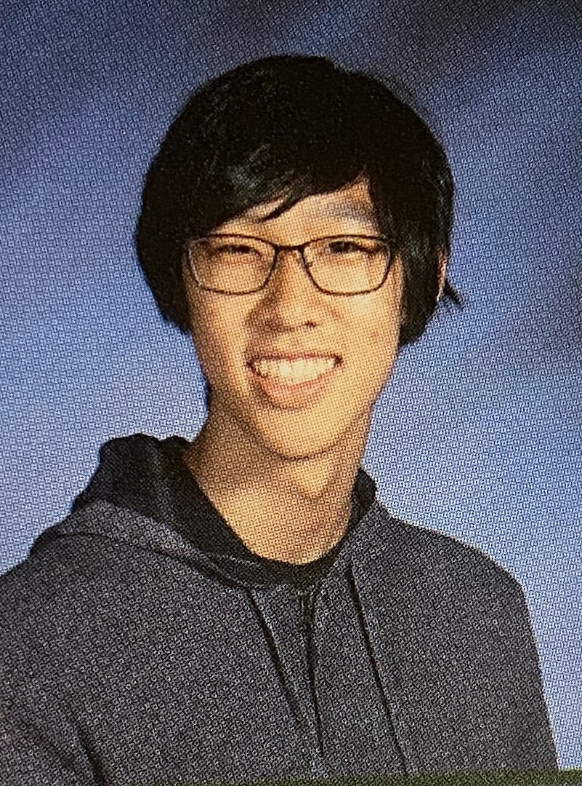Arib Mahmud
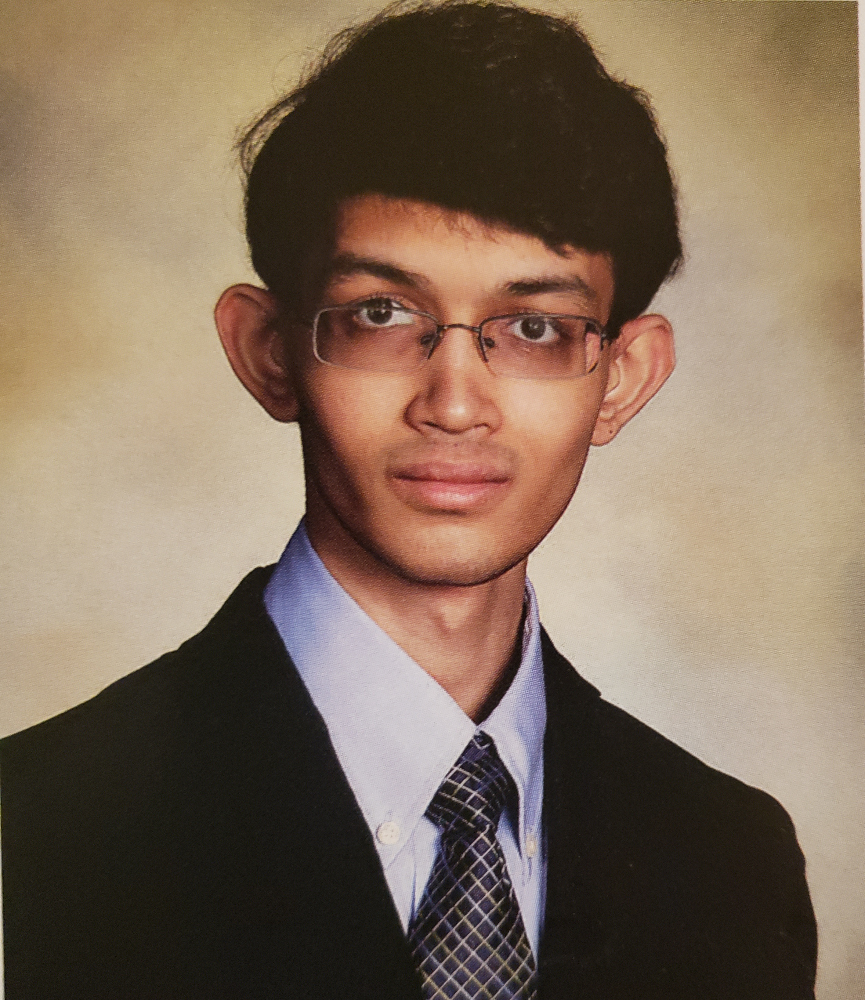Salem Crute
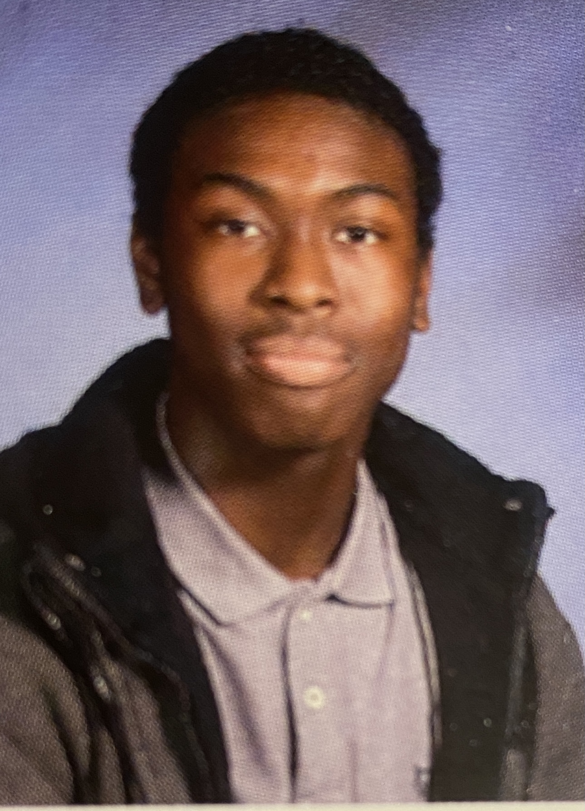Preston Xu
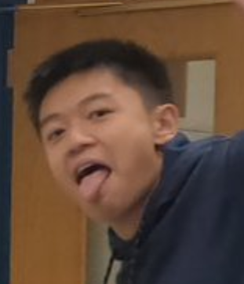Gene Liu
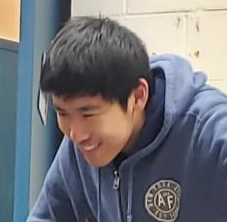David Lev Samolkin
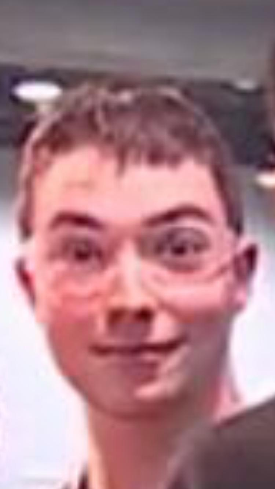Janice Kim
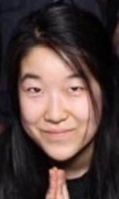Anna Xia
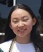Katrina Pham
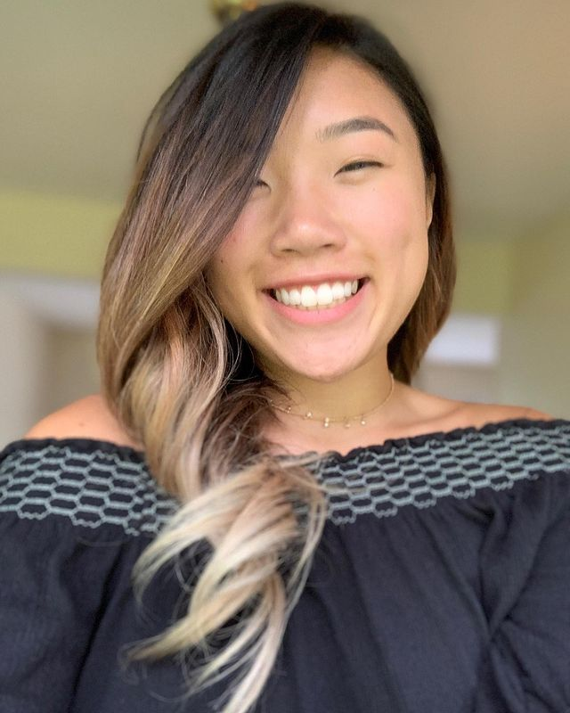Ben Li
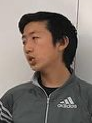Pierce Rubenstein
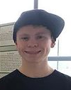Drew Fabian
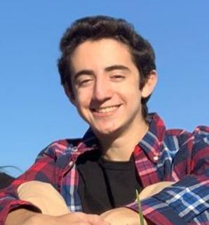Rachel Su
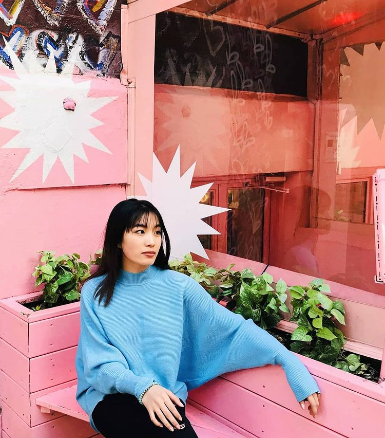Max Zhuang
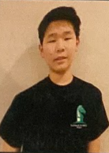Jacob Dennis
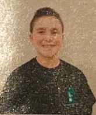Fillip Kizhner
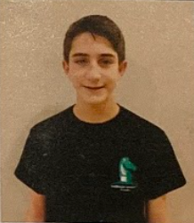Dmitry Sambuk
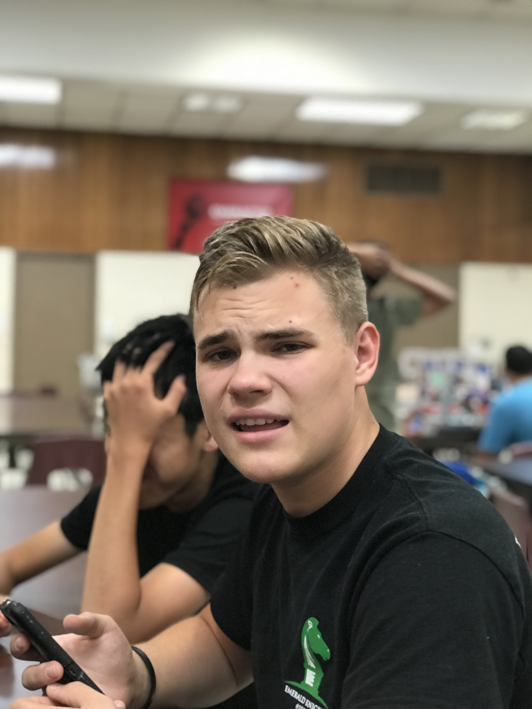Andie Weiser-Schlesinger
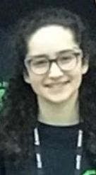Neha Parmar
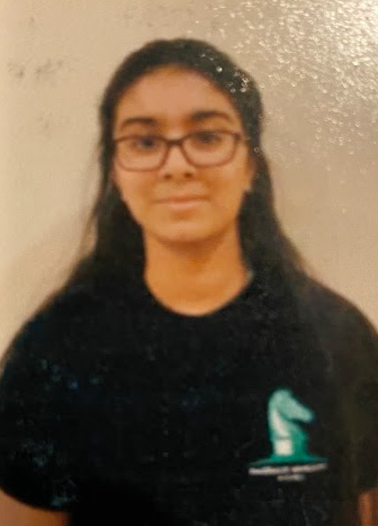